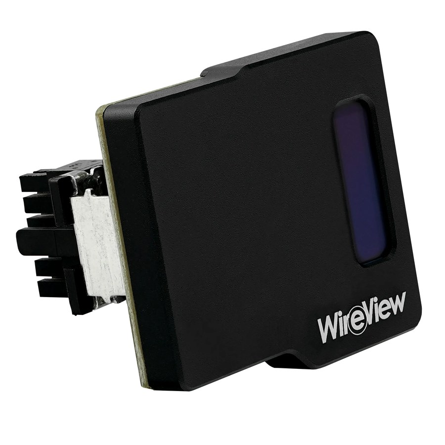
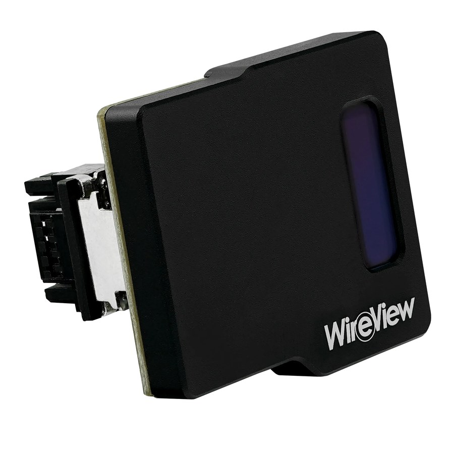
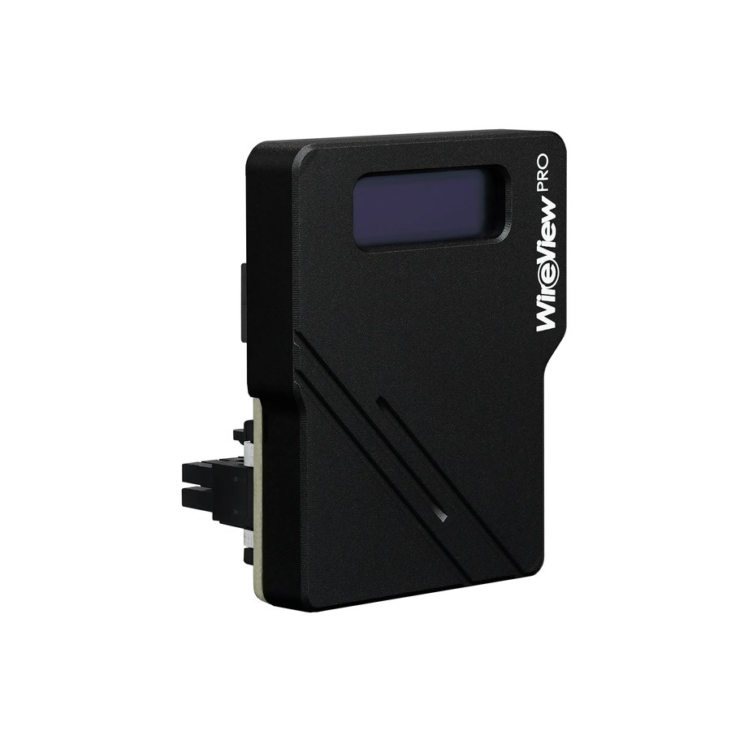
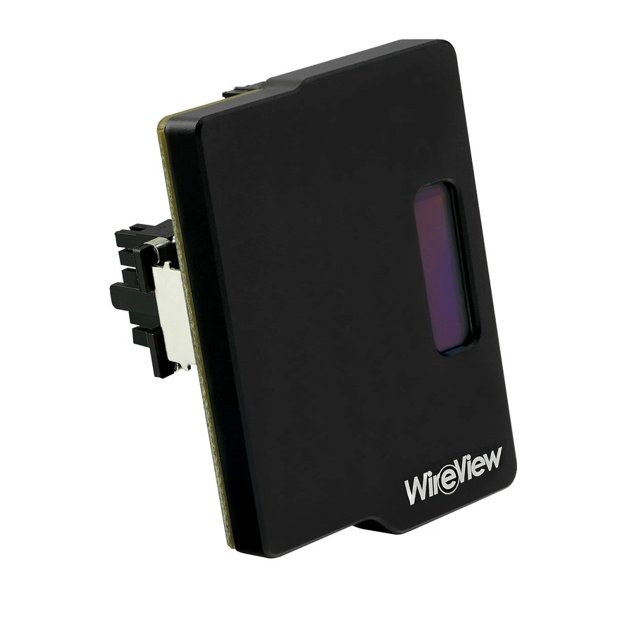
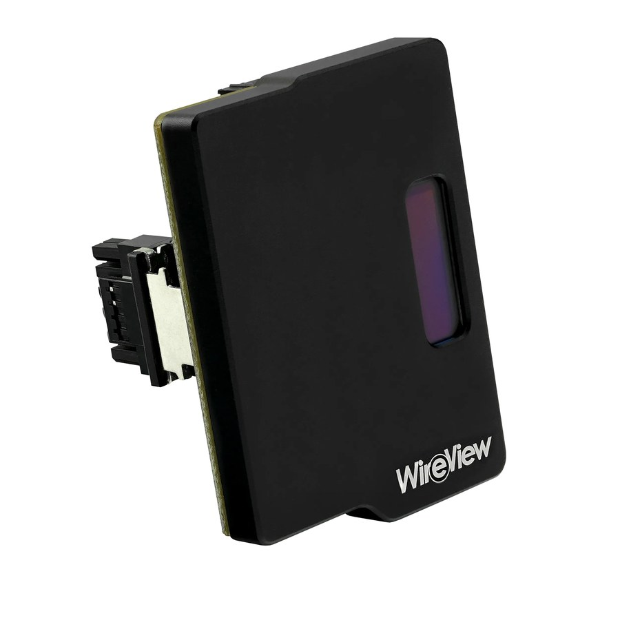
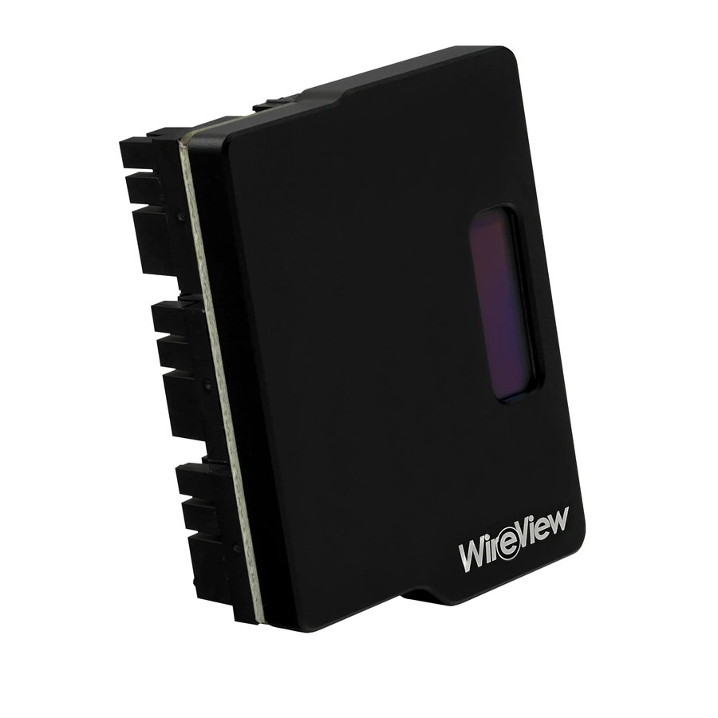

Wireview GPU 1x12VHPWR Normal
SKU: TG-WV-H1N
Conector moderno 12VHPWR — orientación estándar
Para GPUs RTX 40 / 50 series con cable saliendo hacia abajo. Mide consumo en el conector 16-pin sin necesidad de software.
Wireview es un dispositivo que se conecta entre la fuente de poder y la tarjeta gráfica, midiendo en tiempo real el consumo de potencia, voltaje y corriente. Permite monitorear el comportamiento eléctrico exacto de la GPU sin software adicional.
Importante: Wireview es una herramienta de diagnóstico, no un componente decorativo. Es para usuarios técnicos, overclockers, reviewers y técnicos de servicio que necesitan datos eléctricos precisos.
Hay tres factores: el conector que usa tu tarjeta gráfica, la dirección de instalación según tu gabinete, y si quieres la versión Pro con funciones extra.
El conector moderno de RTX 40, 50 series y RX 7900 series. Es el formato dominante actual.
El conector tradicional usado por GPUs de generaciones anteriores y algunas tarjetas profesionales.
Convertidor que permite alimentar GPU 12VHPWR desde fuente con conectores PCIe tradicionales.
Versión avanzada con funciones extra de monitoreo y mayor precisión de medición.
Los modelos vienen en dos orientaciones: Normal (cable hacia abajo) y Reversed (cable hacia arriba). La diferencia es por dónde sale el cable de la GPU. Elige según el routing de cables de tu gabinete.

Para GPUs RTX 40 / 50 series con cable saliendo hacia abajo. Mide consumo en el conector 16-pin sin necesidad de software.

Misma función que la versión Normal pero con orientación reversa. Para gabinetes donde el routing del cable necesita salir hacia arriba.

Versión profesional con mayor precisión de medición y funciones extra para reviewers, overclockers y técnicos. Orientación reversa.

Combina función de Wireview con conversión 12VHPWR → 3x 8PIN. Permite usar GPU 12VHPWR moderna en fuente con conectores PCIe tradicionales mientras se mide consumo. Orientación normal.

Misma función que la versión Normal pero orientación reversa para routing distinto.

Para tarjetas que usan 3 conectores PCIe de 8 pines (RTX 30 series, GPUs server y workstation). Mide consumo del bus 8 PIN tradicional.
Para precios actualizados, disponibilidad y todas las presentaciones, consulta nuestro catálogo digital.
Ver catálogo digital